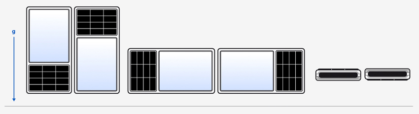

QOrientationReading Class
The QOrientationReading class represents one reading from the orientation sensor. More...
| Header: | #include <QOrientationReading> |
| CMake: | find_package(Qt6 REQUIRED COMPONENTS Sensors) target_link_libraries(mytarget PRIVATE Qt6::Sensors) |
| qmake: | QT += sensors |
| Inherits: | QSensorReading |
Public Types
| enum | Orientation { Undefined, TopUp, TopDown, LeftUp, RightUp, …, FaceDown } |
Properties
- orientation : const Orientation
Public Functions
| Orientation | orientation() const |
| void | setOrientation(Orientation orientation) |
Detailed Description
The orientation sensor reports the orientation of the device. As it operates below the UI level it does not report on or even know how the UI is rotated. Most importantly this means that this sensor cannot be used to detect if a device is in portrait or landscape mode.
This sensor is useful to detect that a particular side of the device is pointing up.
QOrientationReading Units
The orientation sensor returns the orientation of the device using the pre-defined values found in the QOrientationReading::Orientation enum.
Member Type Documentation
enum QOrientationReading::Orientation
This enum represents the orientation of the device.
To explain the meaning of each value it is helpful to refer to the following diagram.
The orientations are shown here in order: TopUp, TopDown, LeftUp, RightUp, FaceUp, FaceDown.

| Constant | Value | Description |
|---|---|---|
QOrientationReading::Undefined | 0 | The orientation is unknown. |
QOrientationReading::TopUp | 1 | The Top edge of the device is pointing up. |
QOrientationReading::TopDown | 2 | The Top edge of the device is pointing down. |
QOrientationReading::LeftUp | 3 | The Left edge of the device is pointing up. |
QOrientationReading::RightUp | 4 | The Right edge of the device is pointing up. |
QOrientationReading::FaceUp | 5 | The Face of the device is pointing up. |
QOrientationReading::FaceDown | 6 | The Face of the device is pointing down. |
It should be noted that the orientation sensor reports the orientation of the device and not the UI. The orientation of the device will not change just because the UI is rotated. This means this sensor cannot be used to detect if a device is in portrait or landscape mode.
Property Documentation
[read-only] orientation : const Orientation
This property holds the orientation of the device.
The unit is an enumeration describing the orientation of the device.
Access functions:
| Orientation | orientation() const |
See also QOrientationReading Units.
Member Function Documentation
void QOrientationReading::setOrientation(Orientation orientation)
Sets the orientation for the reading.
See also orientation().